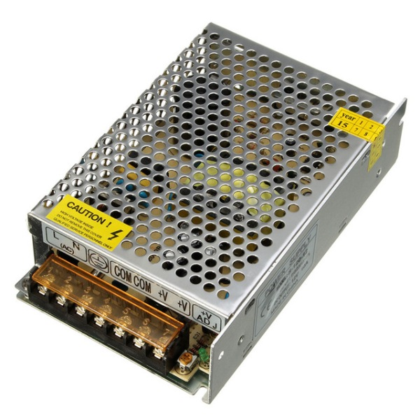
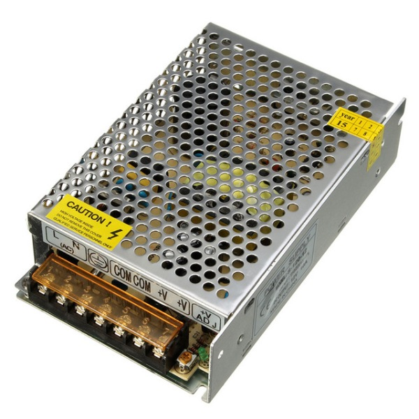
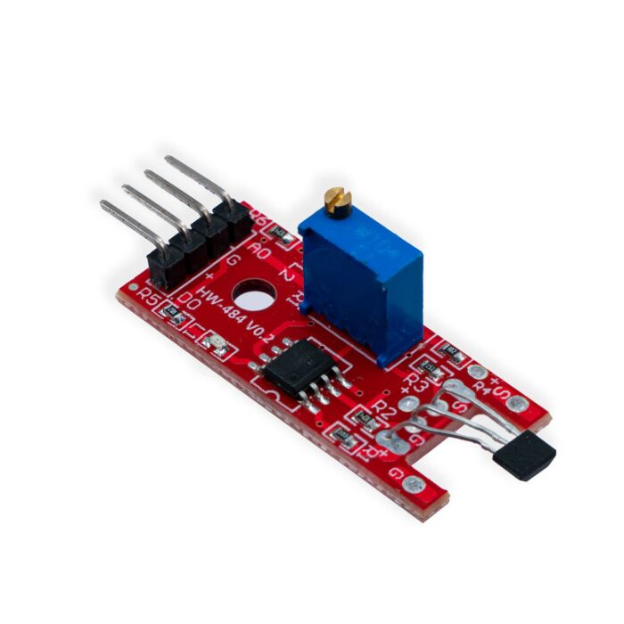
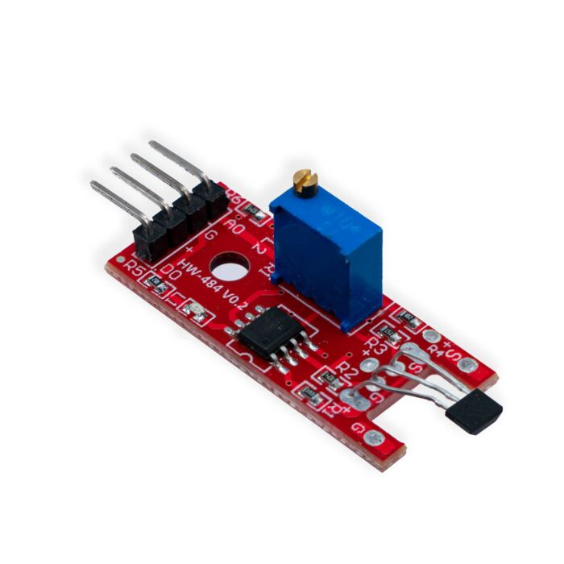

Major Project by DEE | 2023-26 |
Behala Government Polytechnic
Project Overview
The Smart Fan Control System is an IoT-based system designed to control a DC fan through a web interface on any smart device like mobile, laptop, tablet etc.
This project enhances comfort and energy efficiency. while allowing remote operation via smartphone connectivity.
Objective
The goal of this project is to design and implement a fan control system that can smoothly vary the fan speed using Pulse Width Modulation (PWM)
and be controlled wirelessly through a mobile app interface.
Working Principle :
The working of this system is based on user interaction through a web interface that communicates with the ESP8266 microcontroller, which generates a PWM (Pulse Width Modulation) signal to control the DC motor speed via the BTS7960 motor driver.
At first, the user connects to the web interface hosted by the ESP8266. The interface provides control buttons such as ON/OFF and speed levels (30%, 60%, 100%). When the user selects any control option, a corresponding command is sent to the ESP8266 through the network.
The ESP8266 receives this input and processes it to generate a PWM signal with a specific duty cycle. This PWM signal represents the average voltage that will be applied to the motor. A higher duty cycle corresponds to higher speed, while a lower duty cycle reduces the motor speed.
The generated PWM signal is then fed into the BTS7960 motor driver module, which amplifies the control signal to a higher current suitable for driving the motor. The BTS7960 acts as a bridge between the low-power control circuit and the high-power motor, ensuring safe and efficient operation.
Finally, the BTS7960 outputs the controlled voltage and current to the DC motor according to the PWM duty cycle. This allows smooth and efficient speed variation of the fan, with quick response to user inputs through the web interface.
Circuit Design:
Software & Programming
The code is written in Arduino IDE using the ESP32 library and Blynk framework for communication.
The main logic includes reading sensor data, controlling PWM signals, and updating fan speed based on app commands.
Setup:
- Initialize Wi-Fi and Blynk connection
- Configure PWM output pins
Loop:
- Read input from app
- Map values to PWM duty cycle
- Send feedback to app
Features
Web Interface Control System : A web interface control system allows users to remotely monitor and control devices like DC motors or smart fans through any browser, making it platform-independent and easy to use. It offers real-time control, enhanced security through access management, and flexibility for future upgrades without hardware changes. The system provides a user-friendly interface for smooth operation, ensuring efficient, accessible, and modern control suitable for IoT-based applications.
Soft Start Mechanism (Smooth speed-up). Click here to understand the concept of soft start method of dc motor.
Energy Efficient Design. Click here for the explanation for the energy effiiency advatage by using the pwm method.
Results & Testing
The system successfully controls fan speed using PWM via mobile application.
The feedback mechanism ensures accurate control and stable operation even under variable loads.
Future Scope: Integration with voice assistants and temperature-based auto control.

 

 
